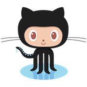

Hello! You've probably landed here because a project maintainer linked you here encouraging you to try your hand at contributing to the project.
We know that this isn't always the easiest thing to do. So, @kentcdodds created a free series on egghead.io to help you out!
So if you want to contribute to an open source project, don't delay!
Add this markdown to your README:
[](http://makeapullrequest.com)
**Working on your first Pull Request?** You can learn how from this *free* series [How to Contribute to an Open Source Project on GitHub](https://egghead.io/series/how-to-contribute-to-an-open-source-project-on-github?af=5236ad)